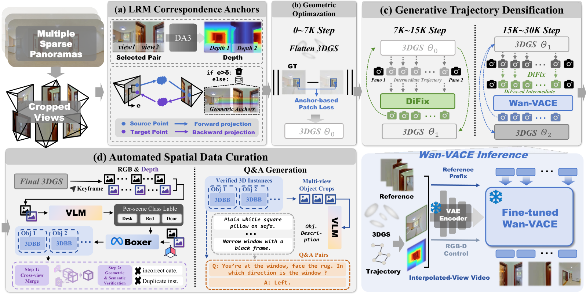

Paper Analysis
01 · Sparse Panoramas as a Reconstruction Problem
一个全景在同一相机中心提供很宽视野，但不因此提供充分的多视角三角测量。房源中的全景位置往往相隔很远，跨房间重叠有限，墙面又缺少纹理。因此把每张全景裁成多个透视视图之后，仍然可能缺少稳定的跨位置几何约束。
该工作希望把这类 RGB 数据转为多房间三维环境，而不仅是生成好看的漫游视频。输出包括显式 3DGS、渲染 RGB-D、三维实例框、描述和空间问答。这里的 spatial memory 指可重复渲染与优化的三维场，不是 Transformer 中固定预算的历史 token。
流程需要整场景视图选择、优化、生成和数据整理，属于离线建场景。论文描述超过 1K 场景、100K 实例和 2M QA 的规模，但已构建的数据规模、可公开下载规模和经过独立验证的标注量不能等同。
Paper Analysis
02 · Reading the Four Stages in Figure 2

Yuanyuan Gao et al. · Original figure, unmodified · CC BY 4.0 · Paper & Caption ↗
Figure 2(a) 从邻近且共视的图像对运行冻结 DA3，利用预测深度和相对相机把像素前向、反向投影，保留一致的匹配。(b) 用这些固定锚点约束高斯优化，前 7K 步建立初始场 Θ0。锚点来自外部几何教师，不从当前可能已经错误的高斯场重新估计。
(c) 在相邻全景之间建立相机轨迹：7K–15K 步用 DiFix 修复渲染图并回写为 Θ1；15K–30K 步再用 DiFix 加 Wan-VACE 处理连续 RGB-D 条件序列，回写为 Θ2。图中的环路表示每场景优化，不是一次前向完成的在线重建。
(d) 最终高斯渲染 RGB-D，VLM 提出该场景可见类别，Boxer 生成世界坐标下的实例框，再跨视角合并和验证。QA 的外观描述来自图像，距离、方位等属性来自三维框的几何计算。这个阶段位于重建之后，图中没有把语义 loss 反传进前面的高斯几何。
Paper Analysis
03 · Fixed Correspondence Anchors
设源像素为 p，DA3 深度为 D̃_i，相机间变换为 T̃_(j←i)。先反投影成三维点，再变换并投影到 j，得到 q̃；从 j 返回 i 的位置与原 p 的距离构成 forward–backward error。仅保留有效、高置信且误差小于阈值的匹配，并根据置信度和误差赋权。
这些匹配在初始高斯优化前算一次并固定。其意义是把几何监督参照与被优化的场暂时分开，避免错误匹配随着自身优化反复获得支持。它不是保证匹配正确：重复纹理或教师的共同偏差仍可能满足往返一致性。
原图标注 anchor-based patch loss，正文说明固定锚点限制初期多视图监督的采样区域，但没有完整给出该项的逐像素实现、所有权重和阈值。因此可以解释约束的来源与作用，不应把自拟的 reprojection loss 宣称为论文原式。附录的匹配统计使用 <1 像素条件，也不能直接推定所有训练配置统一采用该阈值。
论文倾向对共视图成对运行 DA3。附录显示其在此统计中加入更多联合上下文后，一致匹配指标反而下降；这是特定稀疏全景设置的观察，不是“所有重建任务两帧都比多帧好”的普遍结论。
q_tilde(i->j) = project_j(T_tilde(j<-i) * unproject_i(p, D_tilde_i(p))) e_fb(p) = image_distance(p, p_tilde(i->j->i)) M_ij = fixed valid, confident correspondences with e_fb < tau_fb
Paper Analysis
04 · Training the Restoration Priors
生成模型的适配数据通过场景内留出全景构造：用连通的保留视图重建高斯，留出全景派生的所有透视图都不能进入该次重建。然后在留出相机位置渲染有缺陷的图像，以真实全景重投影作为 RGB 目标。这样输入伪影来自实际稀疏覆盖，而非只用人工噪声模拟。
DiFix 输入渲染 RGB、附近真实参考图和归一化逆深度，通过 L1+LPIPS 拟合留出真实图像。深度提供当前场的几何条件；它是模型预测，不是新增传感器测量。
Wan-VACE 用冻结 VAE 编码参考图、引导 RGB 和重复三通道的深度，并加深度有效性掩码作为条件。对真实视频 latent Z0 与噪声 ε 线性混合得到 Zσ，训练网络预测 flow ε−Z0。这里训练的是修复模型参数，不是直接把 flow loss 施加在高斯中心。
训练 clips 来自同一个全景的固定中心旋转；实际加密则包含不同全景之间的平移。作者用逐帧 RGB-D 渲染提供空间对齐来支持迁移，但并未证明模型从纯旋转数据学到了任意平移几何。训练时引导 RGB 是原始高斯渲染，实际第二阶段则换成 DiFix 修复结果，也存在条件分布差异。
L_DiFix = ||I_hat - I_gt||_1 + LPIPS(I_hat, I_gt)
Z_sigma = (1-sigma) Z_0 + sigma epsilon
L_Wan = E[||F_Wan(Z_sigma, sigma, RGB-D control, reference latents)
- (epsilon - Z_0)||_2^2]Paper Analysis
05 · Generated Views as Weighted Pseudo-Observations
完成适配后，每个新场景先建立 Θ0，再生成中间 RGB 视图参与高斯优化。Eq.6 将真实观测项、生成 RGB 项与真实加生成视图的多视图一致性项相加。真实全景继续约束已观测内容；生成图是按权重使用的 pseudo-observations，不是新拍摄证据。
初期只在固定对应锚点附近施加多视图约束；加密后中间视图缩短基线、增加重叠，于是允许更广泛的局部匹配参与优化。这个改变依赖初始全局对齐可靠；否则生成图之间的一致也可能只是对错误形状达成一致。
作者明确不把渲染深度作为伪真值监督高斯几何，以免直接复制旧深度错误。尽管如此，RGB 伪视图仍通过可微渲染影响几何、外观与不透明度；“没有伪深度 loss”不意味着生成先验无法改变结构。
因此要同时检查真实视图保持程度、独立几何指标和生成质量。仅靠 PSNR 或视觉上更平滑，不能区分正确补全与看似合理的幻觉。论文的几何对照正是这条推断链的重要补充。
Theta* = argmin_Theta [L_obs(Theta; captured views) + lambda_gen L_rgb(Theta; restored RGB views) + lambda_mv L_mv(Theta; captured + restored views)] Rendered depth conditions restoration; it is not pseudo-ground-truth depth.
Paper Analysis
06 · Where Semantics Enters
语义首先用于场景专属词表：Qwen3.5-VL-27B 观察代表视图，提出可空间定位的类别，经归一化与合并后指导 Boxer。从带相机信息的 RGB-D 得到全局实例框，再排除缺少多视角支持、尺寸不合理或投影不一致的候选。
第二次 VLM 检查多视角裁剪，帮助去掉错误类别和重复实例。实例描述结合三维框的几何关系形成问答。这个链条区别于把 CLIP 特征写入每个高斯：论文的主要语义产物是验证后的实例与语言监督，并没有证实高斯内部形成了可查询的连续开放词汇特征场。
五场景 grounding 消融中，无验证、无合并的 F1@0.25 为 16.81；仅合并 18.14，仅验证 18.02，两者联合 19.42。它支持语义和几何检查对标注质量的互补作用，不能说明这些检查修正了上游重建几何。
自动 QA 的距离与物体关系继承重建和实例框的误差。VLM 复核也不提供独立三维真值。因此数据整理需保留来源视图与几何不确定性；这里是对标注可靠性的分析，不是作者已提供了完备误差校准。
Paper Analysis
07 · Evidence, Protocols, and Missing Controls
重建评测使用 30 个保留场景，分成三个各十场景的批次，与训练场景不重叠。Batch 1 中，Holi-360 的 PSNR/SSIM/LPIPS 为 22.58/0.844/0.231，reconstruction-only 版本为 20.34/0.834/0.323。不同基线的预训练、参考条件和适配并非都相同；项目页也明确视频比较不是等输入预算实验。
十个 RealSee3D 场景以 LiDAR 检验几何，所有重建方法共用 DA3 初始化。F@2cm 从 DA3 的 0.2207 到本文 0.2617；同时 precision 从 0.2669 到 0.3235、recall 从 0.1929 到 0.2249。这说明改善不是仅删点提高 precision，但绝对召回仍低，不应描述为完整精确的场景恢复。
下表是另外五个 RealSee 场景的组件消融，不能与十场景主表数值直接横比。对应约束带来较大的几何提升，生成视图进一步增加收益；缺少“有生成、无对应约束”的第四组，所以不能完整分离两者交互，也不能证明生成模块在任意初始几何下都有效。
RealSee 的三维框真值由二维语义和较稀疏深度提升而来，类别粒度也不统一。主表 Macro F1@25 为 20.66%，但 @50 仅 4.81%；低严格阈值成绩提示框的精确程度仍有限，不能只引用宽松 IoU 下的相对增幅。
在 Holi360 自身基准，Qwen3.5-4B 微调后的分类 macro accuracy 从 46.77% 到 85.25%，数值 Acc@0.5m 从 37.59% 到 76.34%。这证明该评测上的适配收益，尚不能替代独立外部基准泛化检验。正文也未充分交代可复现的单目绝对尺度校准与全部训练细节；“RGB 输入”不自动保证公制尺度可信。
| Generated Views | Correspondence Guidance | PSNR ↑ | F@2cm ↑ |
|---|---|---|---|
| No | No | 19.2374 | 0.1991 |
| No | Yes | 19.6408 | 0.3297 |
| Yes | Yes | 21.3035 | 0.3529 |
Paper Analysis
08 · What Transfers to LingBot-Map
可以借鉴的第一点是把监督来源固定下来：若为流式重建添加语义或几何教师，应区分教师证据与学生当前预测，避免用同一错误反复自证。第二点是把真实观测和生成补全分开计权，并用独立几何评价检验生成内容，而不是只看渲染。
直接迁移仍有明显代价：全场景离线对应计算、30K 步优化与视频生成不符合 LingBot-Map 的原始流式前馈设定。它更适合离线训练数据整理，或单独评估的低频地图修复模块；若后者读取未来观测，必须明确已改变严格在线条件。
与 RecallGS 对比，RecallGS 用几何帮助语义读取；Holi-Spatial 360 用几何稳定生成，再用 VLM 整理语义数据。两篇都不能直接替代“语义写入 memory 后改善几何”的证据。要研究该方向，仍需保持几何与缓存预算一致，比较仅语义输出、写入前融合和无语言教师等对照。
截至阅读日，官方仓库根目录仅列 README 与 assets，README 只有项目标题，未核验到可执行训练管线。本文按论文与官方项目材料解读，没有补写缺失的超参数或声称运行过实验。
Discussion
Reading Questions
Is the method online?
不是。它使用场景级预处理、分阶段高斯优化与生成式加密，是离线建图和数据整理管线。
Does the VLM loss improve Gaussian geometry here?
论文没有建立这条反馈路径。VLM 主要在重建后的类别、实例验证和问答阶段使用；几何收益应归于对应约束及生成视图等具体对照。
Why not supervise geometry with rendered depth?
深度来自当前场，直接作为目标容易巩固旧错误；作者仅把它作为修复条件，生成 RGB 仍可能间接影响几何。
What does the ablation leave unresolved?
没有有生成但无对应约束的完整交叉组；五场景消融、十场景几何主表和域内 VLM 微调也分别回答不同问题。
References
- Paper · Version 1 ↗
- Submission History ↗
- Official Project ↗
- Figure License · CC BY 4.0 ↗
- Official Repository ↗
Original paper figure reproduced without modification under CC BY 4.0. Paper and official materials checked on October 28, 2026. Reported experiments were not independently reproduced.
Verified on 2026-10-28. Paper results refer to the linked versions. Repository references were checked on this date.